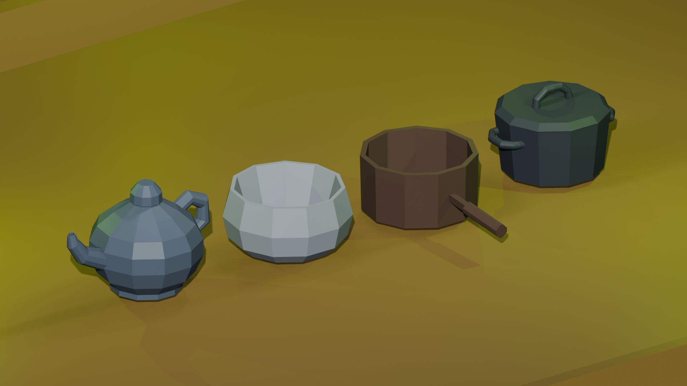
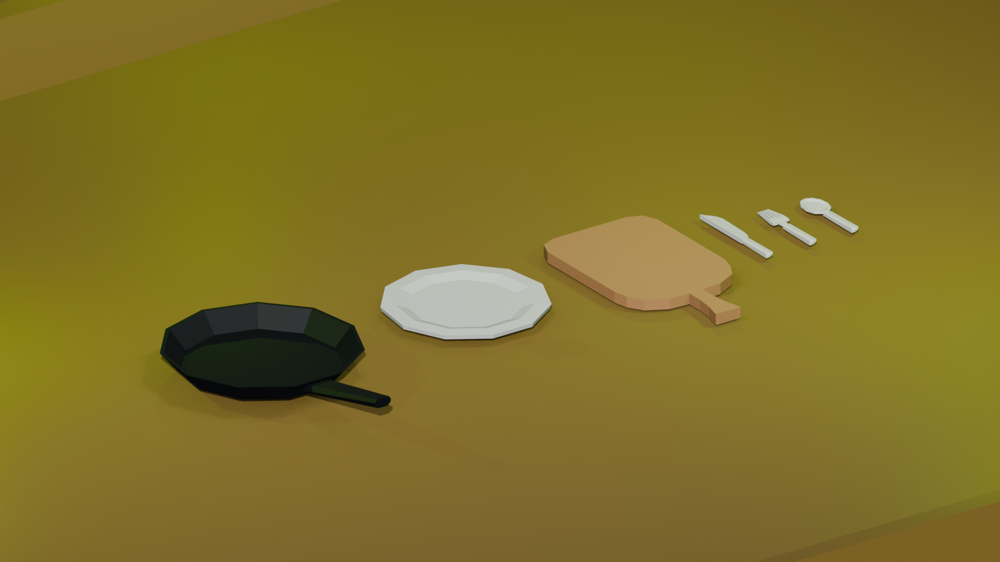
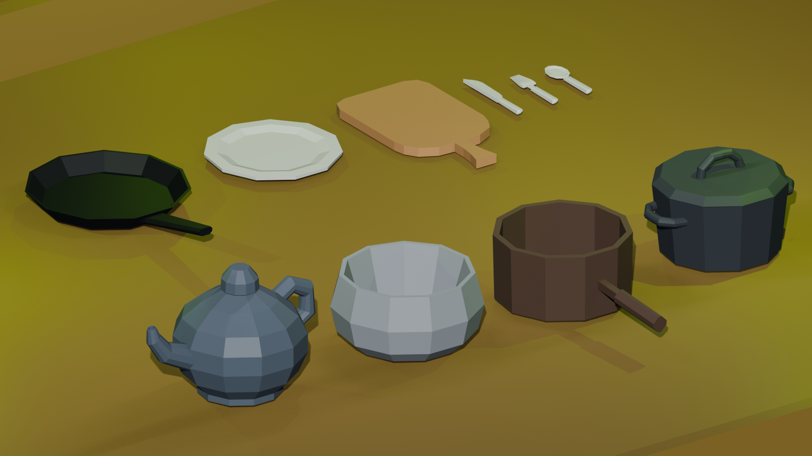
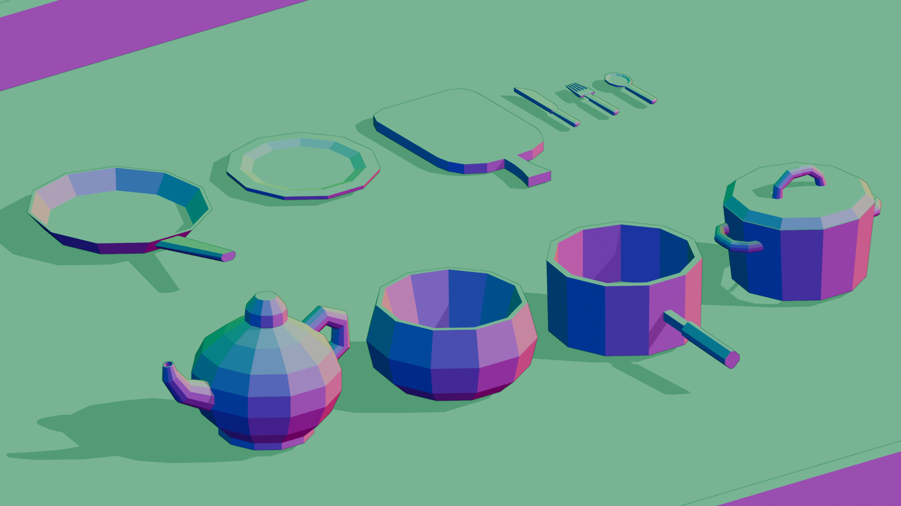

This asset pack features a curated collection of 10 low-poly kitchen models designed specifically for indie game developers. Optimized for real-time rendering in engines like Godot, Unity, and Unreal.
All models share a clean, unified color palette and low polygon count to ensure smooth performance across mobile and web builds without compromising visual style.